Alsasko & Mont-Blanc
Léto 2019. Dva odlišné kouty Francie — vinařské Alsasko s pohádkovými hrady na svazích Vogéz a Chamonix u Mont-Blancu, kde končí Francie a začínají Alpy.
🏰 Orschwiller — Haut-Kœnigsbourg (Alsasko)
Vesnice na úpatí svahů Vogéz, dominantou je hrad Haut-Kœnigsbourg (757 m n. m.). Z hradu je výhled na celou Rýnskou nížinu a za jasných dní až na Schwarzwald a Alpy. (10 fotek · červenec 2019)
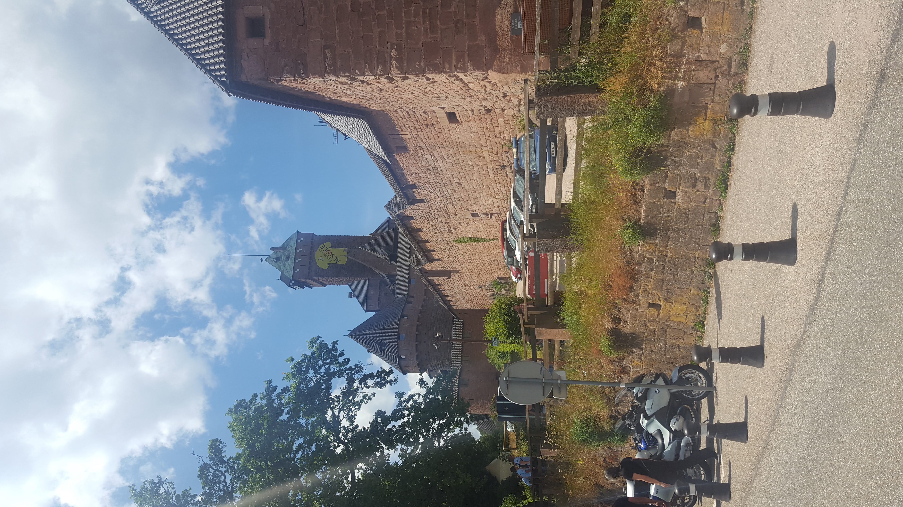
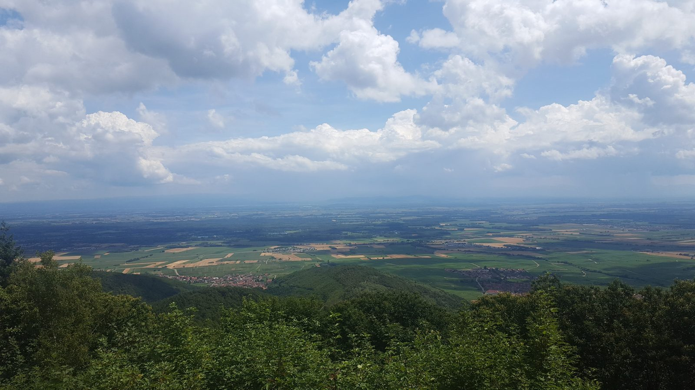
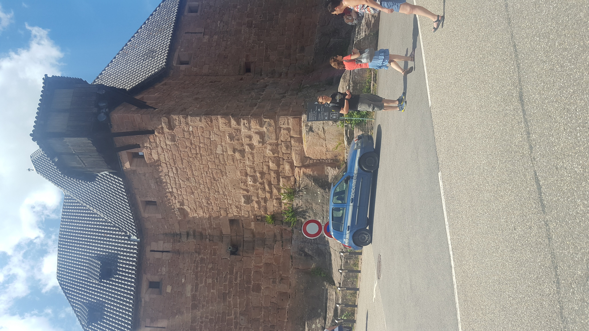
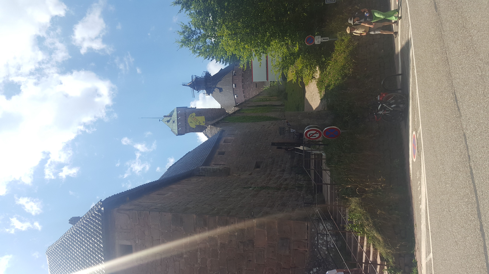
Dalších 6 fotografií (celkem 10)Sbalit další fotografie
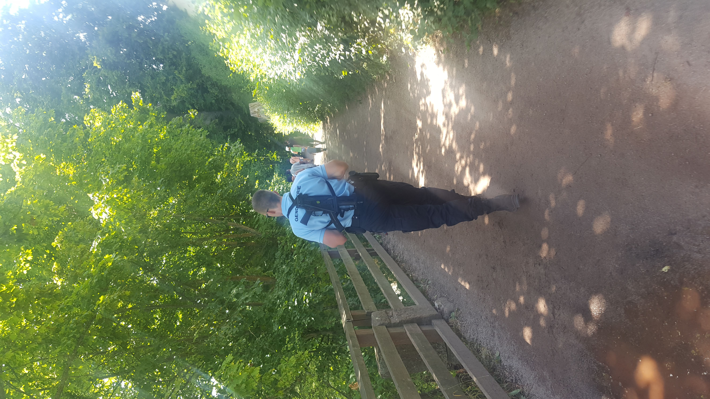
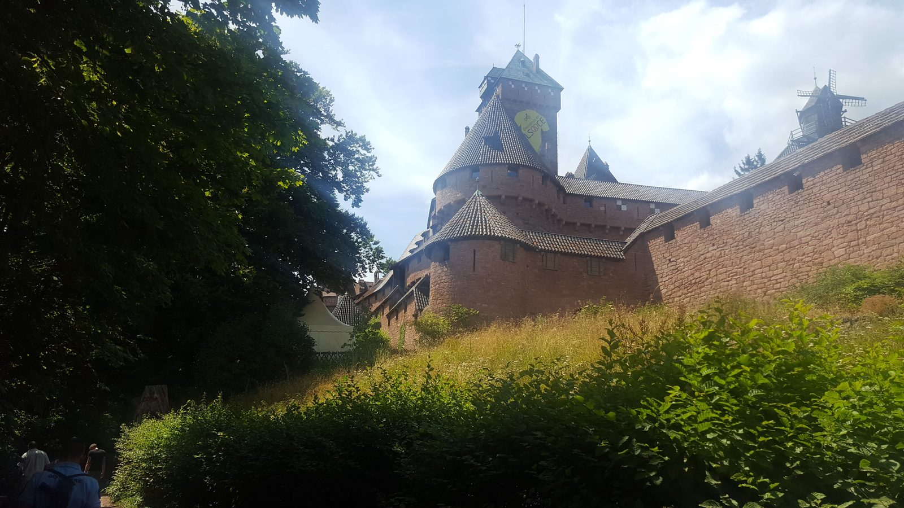
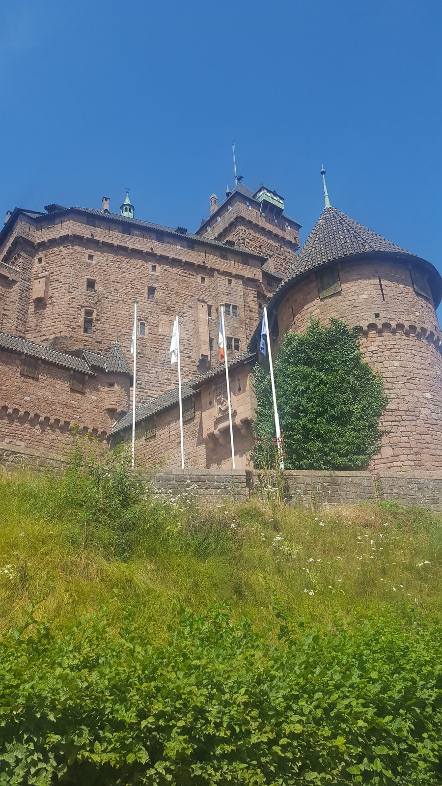
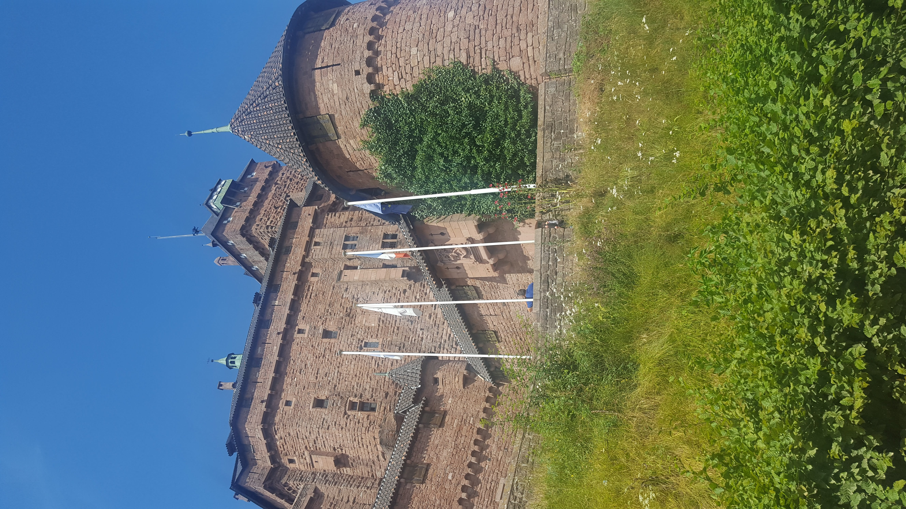
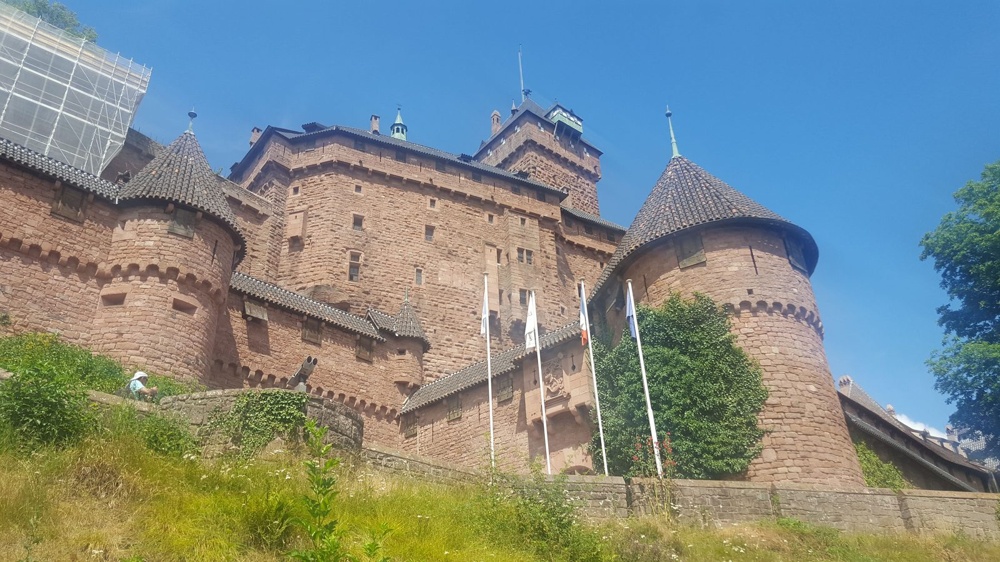
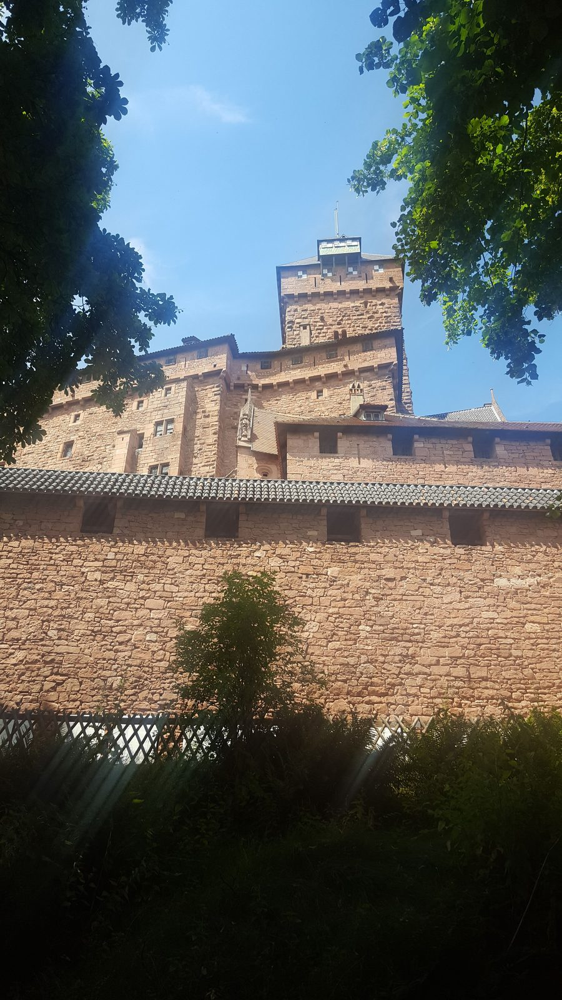
🏔 Chamonix-Mont-Blanc
Městečko v Hautes-Alpes, vstupní brána pod Mont-Blanc. Lanovka na Aiguille du Midi, výhledy na Mer de Glace (ledovec), klasický alpský resort s historií prvních zimních olympijských her (1924). (6 fotek · červenec 2019)
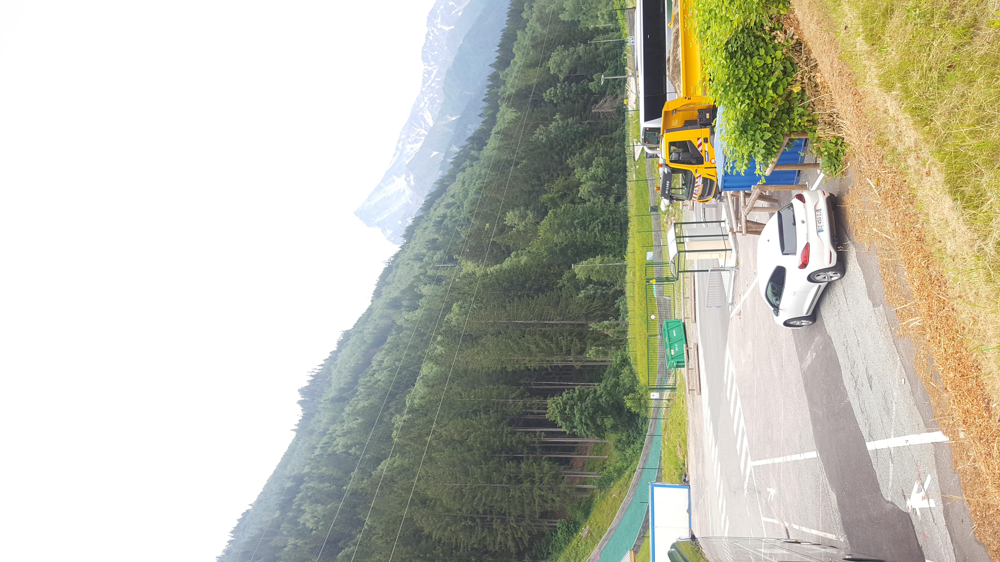
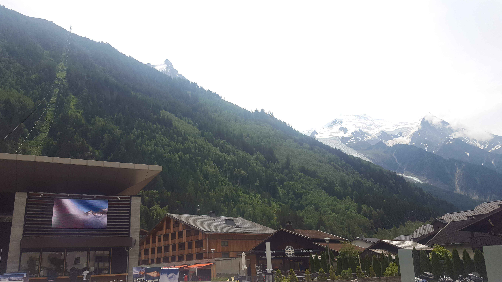
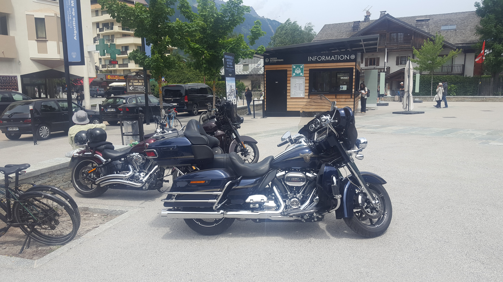
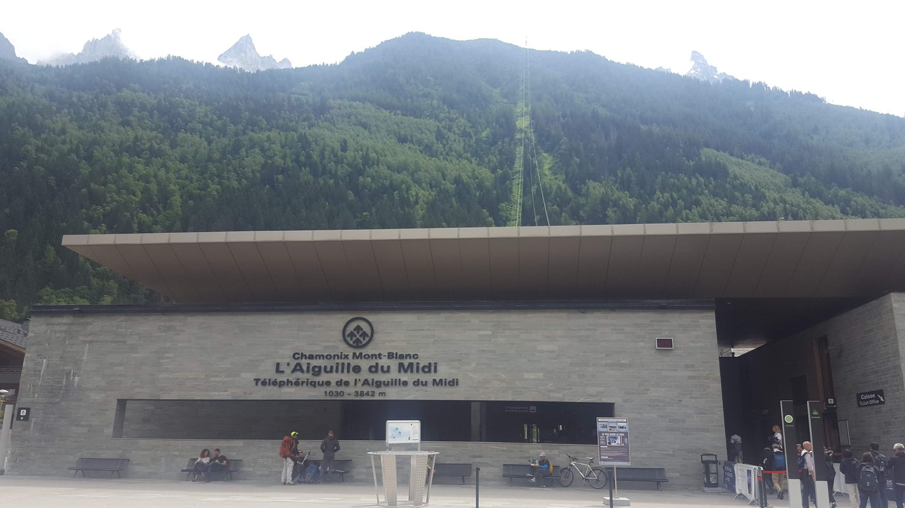
Dalších 2 fotografií (celkem 6)Sbalit další fotografie
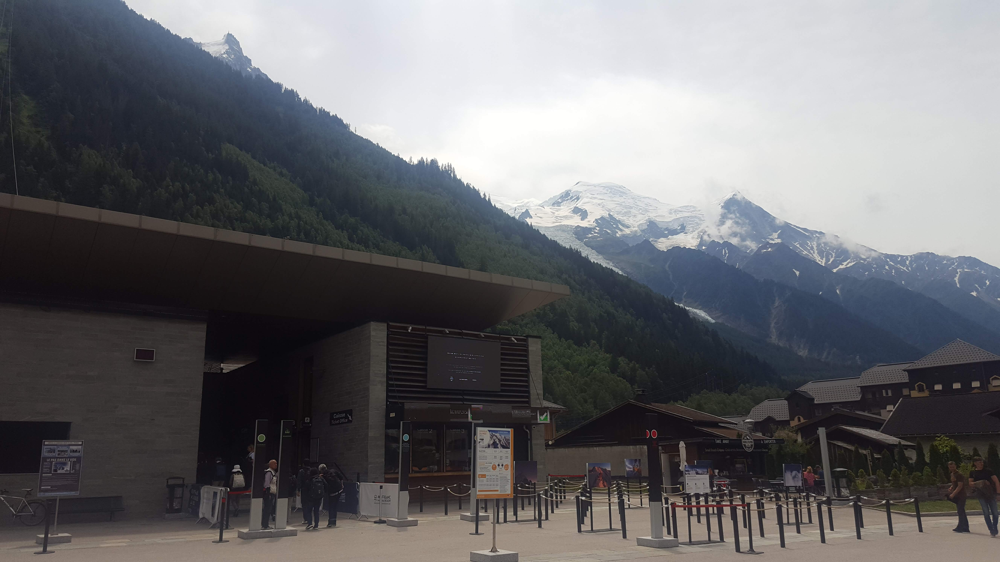
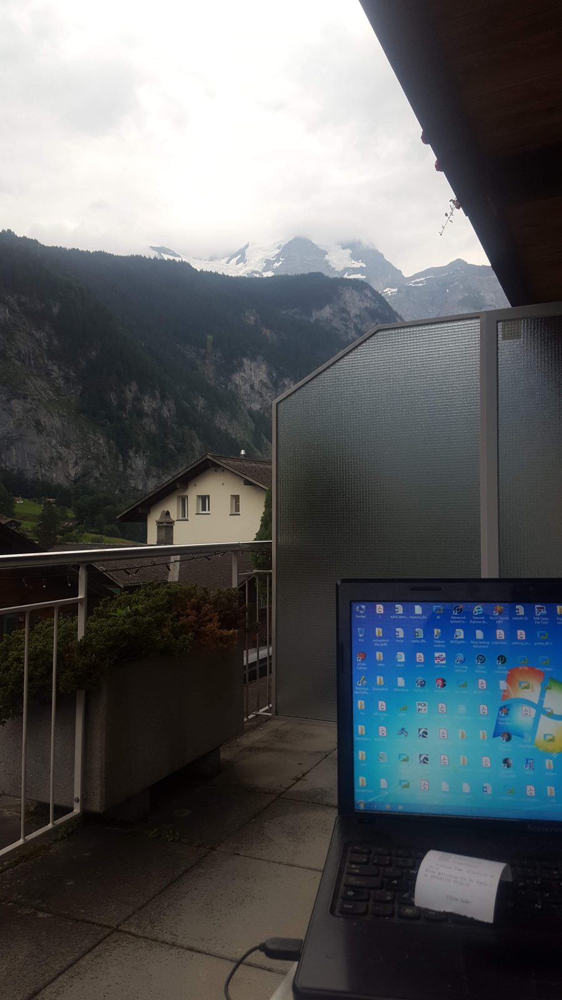
Poznámky k cestě
Alsasko je region, který se chová napůl jako Francie a napůl jako Německo — německy znějící jména obcí, hrázděné domy, vinice na svazích Vogéz a hrad Haut-Kœnigsbourg vysoko nad krajinou.
Chamonix je městečko pod Mont-Blancem (4810 m) — výchozí bod horské turistiky, lanovek na Aiguille du Midi (3842 m) a jeden z nejhezčích pohledů na alpské velikány v Evropě.
Tip na výlet z Chamonix na Aiguille du Midi a k Mer de Glace
Soukromá celodenní prohlídka s průvodcem začíná v Chamonix. Aktivitu jsem přes GetYourGuide nevyzkoušel; před rezervací si ověř aktuální podmínky.
Reklama · Za rezervaci mohu získat provizi.
„Francie není o Paříži — je o tom, co najdeš mezi Štrasburkem, Alpami a mořem."
Tip na výlet do Chamonix s odjezdem ze Ženevy
Reklama · Za rezervaci mohu získat provizi. Nabídky zobrazuje GetYourGuide; nejsou to osobně vyzkoušené aktivity.